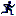
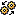
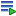
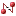
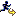

Debug information
The Debug view shows the target information in a tree hierarchy shown below with a sample of the possible icons:
| Session item | Description | Icons |
|---|---|---|
| Launch instance | Launch configuration name and launch type |
 |
| Debugger instance | Debugger name and state |  |
| Stack frame instance | Stack frame number, function, file name, and file line number |
 |
The CDT displays stack frames as child elements. It displays the reason for the suspension beside the thread, (such as end of stepping range, breakpoint hit, and signal received). When a program exits, the exit code is displayed.
In addition to controlling the individual stepping of your programs, you can also control the debug session. You can perform actions such as terminating the session and stopping the program by using the debug launch controls available from Debug view.
| Action | Icon | Description |
|---|---|---|
| Terminate | Ends the selected debug session and/or process. The impact of this action depends on the type of the item selected in the Debug view. | |
| Disconnect |
 |
Detaches the debugger from the selected process (useful for debugging attached processes) |
| Remove All Terminated | Clears all terminated processes in Debug view | |
| Terminate and Remove | Ends the selected debug session and removes it from Debug view | |
| Relaunch |
 |
Starts a new debug session for the selected process |
| Terminate All | Ends all active debug sessions in Debug view |